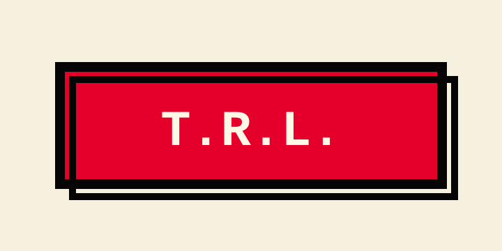
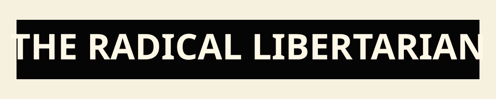
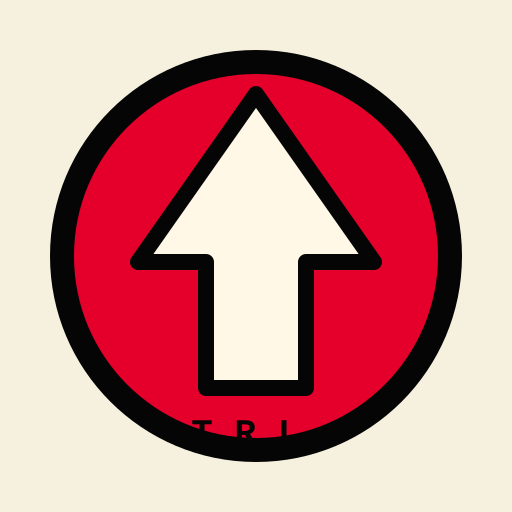
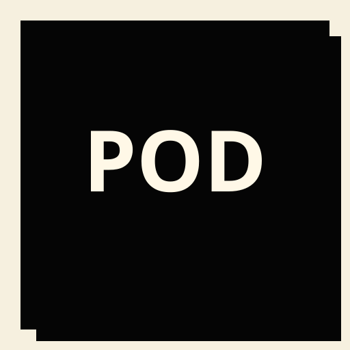
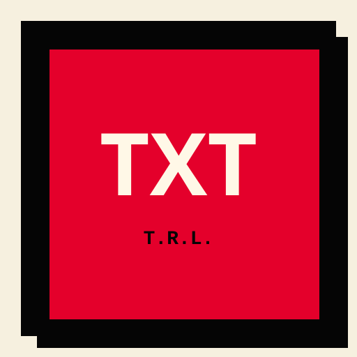
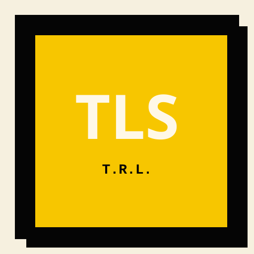

Asset System
Assets
Brand assets, icons, social cards, image placeholders, and prompt registries for The Radical Libertarian.
The visual ammo depot.
Brand marks, icons, social cards, image placeholders, and prompt registries. This is the asset layer that keeps the signal from looking like it was designed inside a municipal printer queue.

Box Logo
Header-ready T.R.L. boxed logo.
Brand
Wordmark
Wide brand wordmark for covers and banners.
Brand
Mark
Compact symbol for avatars and profile contexts.
Mark
Podcast Icon
Icon
Essays Icon
Icon